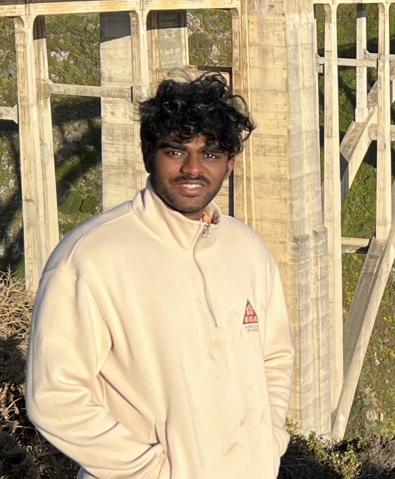

Crop and Soil Science, Oregon State University
Dr. Jing Zhou received his Ph.D. in Biological and Agricultural Engineering from the University of Missouri-Columbia and later worked as a Postdoctoral Research Associate in the Digital Agriculture Lab at the University of Wisconsin-Madison. His research focuses on developing sensing, geospatial, automation, and AI technologies to advance sustainable crop management and food systems. At OSU, Dr. Zhou leads the Precision Agriculture Innovation Center, where his team develops remote sensing, IoT sensor networks, and AI-driven solutions to address real-world challenges in sustainable agriculture.

Ameyassh is a PhD student at Oregon State University under the mentorship of Dr. Jing Zhou. He is conducting pioneering research at the intersection of Artificial Intelligence and Precision Agriculture. His diverse technical background, including a Bachelor's degree in Information Technology from the University of Mumbai, enables him to contribute effectively to his current research endeavors. Ameyassh's research focuses on the development of cost-effective computer vision solutions for agricultural applications, particularly in the domain of seed identification. His approach integrates advanced machine learning techniques with practical, field-deployable systems, aiming to enhance the accessibility of sophisticated agricultural analysis to farmers. Beyond academics, Ameyassh is a self-taught music producer.
ameyass@oregonstate.eduI am a senior undergraduate student at Oregon State University. I currently work as a sensor platform developer, but also work on general development of a robot being used for imaging of crops. These include autonomous navigation, remote control, and data collection with categorization for peripheral sensors and devices.
Logan Snell, originally from California, joined the team in December of 2023. As a Mechanical Engineering undergraduate, he focuses on all physical aspects of grass seed research; everything from how to collect and separate seeds to imaging them. Logan's passion for engineering and design was sparked during his high school robotics days. He has research grants from the Continuing Research Program and will be presenting his work in the spring. Outside of work, Logan enjoys racing drones and snowboarding. A dedicated creator, his favorite tool is a 3D printer, and he's especially proud of his contribution to designing the housing for a seed moisture sensor.
Marshall was an undergraduate researcher in the PAIC lab and contributed to the development of the Grady Seed Moisture Sensor. We wish him the best in his future endeavors.